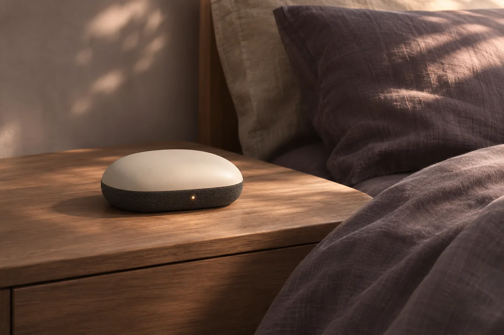

眠相床边监测器
床边，留一点位置。
将监测器放在床头柜上。睡觉时无需佩戴设备，也不用改变平时的睡姿。
- 睡前
- 按平时的习惯关灯，设备会自行完成校准。
- 夜里
- 状态灯会熄灭，夜间提醒默认静音。
- 醒来
- 从晨间摘要查看入睡、翻身和清醒的时间。
从入睡到清晨
照常睡就好。
把眠相放在床边。手机可以留在客厅。它会在你起床前，整理好这一晚的记录。
- 睡前校准用一小段安静时间，测量房间的背景信号。
- 开始记录入睡后自动记录，设备指示灯熄灭。
- 生成晨间摘要醒来再看。报告会在这里等你。
晨间报告
把一整晚，
看得更清楚。
一夜之间，你会在深睡、浅睡与短暂清醒之间来回切换。点击报告里的时间点，看看眠相记录了什么。
交互样本 B-041
23:48 检测到一位使用者入睡。
帮助中心
第一次使用，可能会问。
关于摆放位置、晨间报告和这间样本卧室。
监测器需要一直连着手机吗？
睡前完成设置就可以把手机放在一边。示例中的监测器会在本地写入夜间记录，晨间报告会在下次打开时同步。
宠物走动会被写进报告吗？
短暂走动通常会被排除。信号难以判断时，报告会在时间轴上标注该时段，方便你对照当晚的情况。
为什么床上只有一个人，报告还是给出了标记？
标记只表示信号需要复核。你可以在工单里补充当晚的情况，再决定是否把这段记录计入报告。
网页上的时间来自哪里？
首页使用本地时钟。卧室画面会按这个时间切换，报告内的时间则随原记录保留。
帮助文章 · 信号复核
如何读懂一次信号标记。
窗帘轻碰墙面、楼上的水管、隔一堵墙传来的脚步声，都可能出现在原始记录里。眠相会过滤掉这些干扰。
- 样本设置
- 单人卧室
- 睡前校准
- 通过。室内只有一组规律信号。
- 自动复查
- 通过。室内应该只有一组规律信号。
样本 B-041 的 02:17 标记已从晨间摘要移除。原始记录保留。
查看这个样本的复核过程支持记录 / B-041
重复标记的处理进度。
记录条件：单人卧室。无宠物。未移动设备。
保留原始分轨。相似程度低，暂按背景信号处理。
两条信号的相似程度已达到合并阈值。同一使用者的重复记录将自动归并。
B-041 · 逐夜复核
查看标记的原始来源。
选择一个夜次，比较同一时段的两条原始信号。归并前，灰线一直保存在背景通道中。
第一晚 · 第二组信号平均落后 1.8 秒。
报告版本
每份报告都有修订记录。
信号归并后，人数以最后一版为准。切换版本可以核对原始来源和处理结果。
- 床位人数
- 1 人
- 记录来源
- 床边监测器
- 生成方式
- 晨间定时发布
已发布版本会保留归并后的人数。
报告附注 / B-041
人数如何校正。
人数以床位校验为准。呼吸计数用于解释睡眠阶段，两项结果会分别写入记录。
- 检测到第二组规律信号。源位置：离床面 46 厘米
- 两组信号同时中断 11 秒。
- 床位判空。两组信号持续上传。
- 使用者已重新入睡。后续床位校验：无人
校正未应用。修改人数时，必须至少保留一位使用者。
附件预览
原始附件与报告一并保留。
这张图片来自工单提交者。监测器与外接设备各自保留时间戳。
- 标注区域
- 走廊
- 报告自动识别
- 床位
- 原始帧
- 02:16:59
 02:16:59B-041 / CAM 01
02:16:59B-041 / CAM 01
设备状态
设备离线后，哪些功能可用？
历史报告会保留最后一次同步的版本。连接恢复后，页面会自动更新服务状态。
- 床边监测器
- 离线 · 03:14 断开
- 原始附件
- 已冻结
- 使用者记录
- 写入中
当前可用设备：0 台。
会话恢复
在另一端继续查看。
关闭网页不会删除已生成的报告。再次打开时，系统会尝试恢复上一次的阅览位置。
恢复范围：当前页。写入来源尚未核实。
连接诊断 / B-041
核对当前连接。
重新连接后，请对照时间和状态。如果两端信息一致，系统将它们视为同一次会话。
- 阅读端时钟
- 本页前台停留
- 00:00
- 阅读方向
- 向下查阅
等待阅读端连接。
诊断状态只在本次阅览中保留。
来源核验
比较两个连接端。
可以停一下或往回滑，核对两端写入的最新状态。
| 字段 | 当前页面 | 卧室设备 |
|---|---|---|
| 连接状态 | 在线 | 离线 |
| 最后写入 | ||
| 阅览方向 | 向下查阅 | — |
| 页面状态 | 前台 | — |
等待两个来源完成校验。
眠相 · 服务状态
设备已离线。
监测仍在继续。

- 卧室在线设备
- 0
- 仍在写入的使用者
- 1
正在为当前使用者准备晨间摘要。